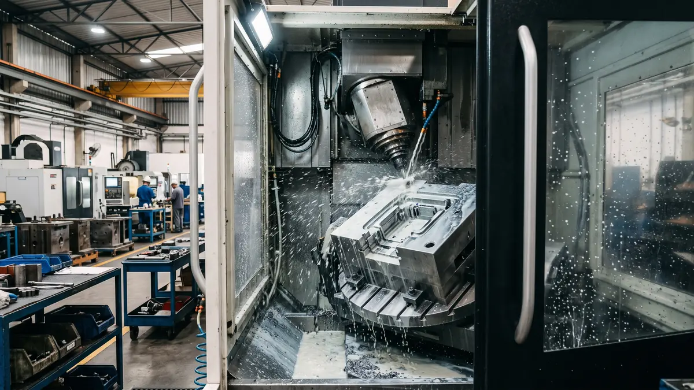

Ferramentaria e Aços para Moldes
Diferença entre Aço P20, DIN 1.2738, AISI H13 e Inox 420 para Moldes de Injeção
Tabela comparativa de dureza Rockwell HRC, resistência à abrasão por fibra de vidro, polimento espelhado SPI A-1 e vida útil esperada por classe construtiva.
Publicado em 06/05/2026 • Leitura Técnica B2B
Ler Estudo Completo